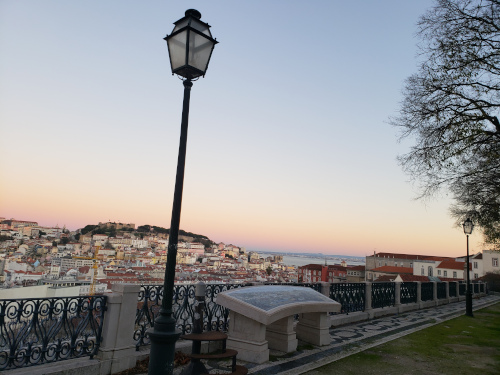
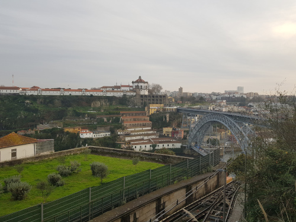
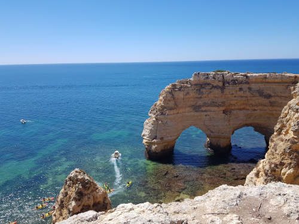
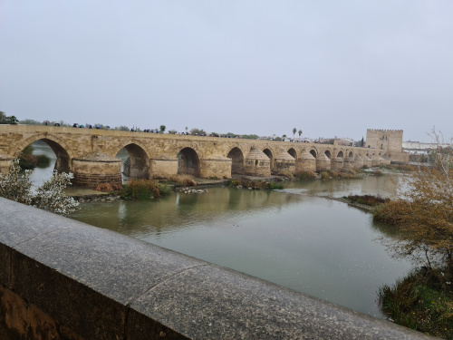
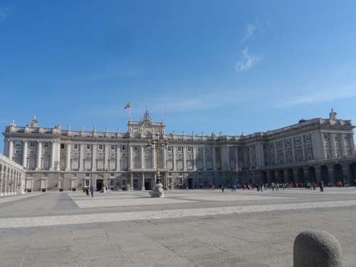
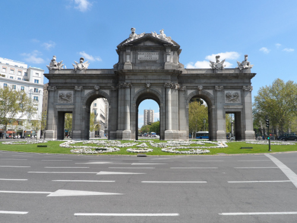

Portugal
Portugal é um País que se localiza no extremo sudoeste do Continente Europeu. A capital de Portugal fica em Lisboa uma cidade muito bonita e cheia de história.
Vamos conhecer um pouco mais da cultura desse País e descobrir todas as riquezas que ele pode nos oferecer!!!

Espanha
Espanha é o segundo maior País da União Européia, localizado na Península Ibérica, sua capital é Madrid, uma cidade muito romântica e conhecida pelo acervo de arte na Europa.
Possui 17 comunidades autônomas, cheias de monumentos históricos, tradições e culinária típica conhecidas no mundo todo.
